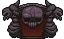
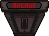
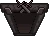
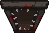

The binding of Isaac
LE STANZE
Ogni piano di The Binding of Isaac è fatto da un certo numero di stanze che aumentano a seconda del piano in cui ci si trova.
Stanze Normali
Le stanze normali costituiscono la maggior parte delle stnze di un piano. Queste stanze contengono tipicamente nemici e possono droppare un raccoglibile o una chest dopo che tutti i nemici sono stati sconfitti.
Isaac non può lasciare una stanza con nemici finchè non sono stati uccisi tutti oppure una porta viene aperta con un' esplosione. Se Isaac ha in mano un oggetto attivo, completando la stanza aggiungerà una carica.
Le stanze possono avere dimensioni differenti; nonostante le stanze di dimensioni normali siano le più comuni, possono apparire anche stanze grandi il doppio o il quadruplo.
Possono anche apparire stanze triple a forma di L, corridoi stretti e stanze minuscole. Inoltre, completare una stanza quadrupla o una stanza a forma di L aggiungerà due cariche all'oggetto attivo di Isaac. L'ultima ondata di Boss Rush aggiunge solo una carica.
Stanze Speciali
Stanze dei Boss
Queste stanze contengono un Boss casuale o definito a seconda della situazione. Con la vittoria, questa stanza garantisce ad Isaac un oggetto pescato dalla pool dei Boss, dei cuori a secondo della difficoltà e una botola che conduce al livello successivo.
Stanze dei Mini-Boss
Queste stanze sono identiche in apparenza alla stanze normali e contengono uno dei Sette Peccati Capitali.
- Le stanze dei Mini-Boss sono chiuse con sbarre di ferro all'ingresso e non possono essere aperte e aperte, anche con esplosioni, fino a quando il Mini-Boss non viene sconfitto
- Le stanze dei Mini-Boss hanno un'icona sulla mappa ma non hanno una porta speciale.
Stanze del Tesoro
Una stanza del tesoro, o stanza degli oggetti, è garantita su tutti i piani dal seminterrato seminterrato 1 alle profondità profondità 2. Dal seminterrato 2 in poi, questa stanza richiede una chiave per entrare. La stanza contiene un oggetto dal pool di oggetti della stanza del tesoro. Possono essere presenti vari ostacoli e occasionalmente aggiunti
in Afterbirth Mosche o aggiunti in Afterbirth † / Rimossi in Pentimento Avidità Divari/Aggiunti in RepentanceBulbs saranno presenti. Questa stanza ha una piccola possibilità di contenere due oggetti della riserva del tesoro che possono essere entrambi raccolti e una possibilità molto piccola di non contenere alcun piedistallo di oggetti, invece di contenere una pila di cacca, 3 mosche d'attacco e vari pickup, incluso un gingillo .
Su Downpour, Dross, Mines, Ashpit and Mausoleum, Gehenna, le stanze del tesoro conterranno sempre almeno due oggetti, di cui uno nascosto, simile a Curse of the Blind.
- Le stanze del tesoro d'oro appaiono anche in modalità Avido, agendo allo stesso modo e richiedendo una chiave per aprirsi.
Stanze Arcades
Queste stanze sono chiuse e richiedono una moneta per essere aperte. Le sale giochi possono generarsi solo su piani pari (Seminterrato II, Grotte II, Profondità II, Grembo II, ecc.) o su piani XL se il piano precedente è stato completato con 5 o più monete. Le sale giochi possono contenere macchine, mendicanti e altri oggetti.
A causa del funzionamento dei capitoli alternativi, Arcades verrà generato al primo piano di questi capitoli (Downpour I, Mines I, Mausoleum I, Corpse I).
Challenge Rooms
Le stanze delle sfide possono essere inserite solo se la salute totale di Isaac (cuori rossi, neri e dell'anima) è uguale o maggiore del suo numero di contenitori di cuori. Dopo aver raccolto il suo contenuto, Isaac deve combattere tre ondate di nemici.
Boss Challenge Room
Le stanze della sfida del boss si genereranno solo se Isaac ha la salute completa quando entra nel pavimento. Inoltre possono essere inseriti solo se Isacco ha uno o meno cuori rossi. Il suo contenuto è simile alla Normal Challenge Room, ma dopo aver raccolto il suo contenuto, Isaac deve combattere due ondate di Boss invece dei normali mostri.
Aggiunte in Repentance Boss Challenge Rooms ora è possibile accedere normalmente solo se la salute totale di Isaac (cuori rossi, neri e dell'anima) è uguale o inferiore a 1 cuore intero, ma ora contengono sempre un oggetto dal pool di oggetti boss.
Curse Rooms
Le stanze della maledizione sono stanze speciali con punte sulla porta che feriscono Isaac quando entra e esce dalla stanza. Le stanze della maledizione possono contenere varie cose, dai nemici, ai forzieri rossi, fino agli oggetti del piedistallo.